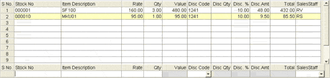
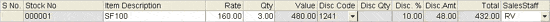
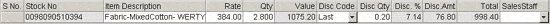

Search Result: Set the filters for the search.
Find in Result Set on: Select the Effective Date or the price as filter
Value: Enter the value to be searched.
The detail part of a bill is displayed.

Each item with its required details for billing can be entered in the Item Details grid from the Direct Entry grid. Press F11 to enter the items in the Direct Entry grid. The columns displayed in the grids can be configured here.
The Direct Entry grid is displayed.

S No.: The serial number is displayed in the item details grid by default.
Stock No: Enter the stock number of the item or press F2 to activate Item Search window and select the required item. If the stock number of the item is entered by scanning the barcode, then the scanning of the barcode is to be done when the cursor is in this field.
Item Description: The description of the selected item is displayed in this field.
Rate: The rate (retail price) of the item is displayed. You may alter the rate if configured. If multiple prices are available for an item (based on system parameter settings for Item Classification), a Browse is displayed . Select the price from the list.
Note: You can set multi-price for an item here.
The rate is computed by applying price factors, if any, defined in the Sales Factor catalogue. Click here to know how to define price factors.
Qty: Enter the quantity of the item being sold. You can also configure Shoper 9 to prefill the quantity field based on two different criteria as follows:
Prefill the quantity field with the Least Saleable Quantity (LSQ) of the item based on the parameter setting.
Prefill the quantity field with the current balance quantity of the item based on parameter setting and the related General Lookup entries. Click here to know the details.
Note: You are allowed to make changes to the quantity of the item that is prefilled in the Qty field, if required.
Additionally, you can configure to make negative billing of stock items (i.e., billing of the stock items even if the specified quantity of the item is not available as per the Item Master) based on parameter setting and the related General Lookup entries. Click here to know the details.
Note: You can edit the quantity of an item (even if LSQ is set) by pressing the Hotkey F3. This facility is based on the system parameter, Enable Only Quantity Editing Option in Billing.
Value: The Item Rate * Item Qty is displayed in this field.
Disc Code: Selection of discount/ sales promotion schemes depend on various settings. Click here to learn about some of the billing configurations. In manual mode, selection of a discount code from the list is needed. If auto selection of discount code during item entry is configured and you want to change the promo or avoid selecting one while scanning items, use arrow keys to select another/ none.
Disc Qty: Enter the quantity of the item being considered for discount. This is applicable only if you have selected Last Piece Discount code in the Disc Code field.
The quantity entered should be:
in multiples of LSQ defined for the item
less than the quantity of the item being sold, i.e., it should be less than the value entered in the Qty field
The Direct Entry grid, where an item with last piece discount code applied is shown.

The discount percentage and discount amount of the discount quantity entered will be calculated internally and displayed in the Disc. % and Disc.Amt fields respectively.
Note: The details of Last Piece Discount will not be displayed in the Item Level Promotional Details displayed on pressing F6.
Disc. %: Displays the percentage of discount applicable as per the selected discount code/ scheme, subjected to the maximum allowed (if defined). If the item level discount selected is a fixed one you cannot edit it. On the other hand, in the case of a variable discount, if it is defined as:
Percentage: You may change the percentage of discount for the selected item
Amount: The computed percentage based on the discount amount is displayed
Disc.Amt: Displays the discount amount applicable as per the selected discount code/ scheme, subjected to the maximum allowed (if defined). If the item level discount selected is a fixed one you cannot edit it. On the other hand, in the case of a variable discount, if it is defined as:
Amount: You may change the amount of discount for the selected item
Percentage: The computed amount based on the discount percentage is displayed
Additionally, if you have defined the variable discount as Both, you may enter either percentage or amount. If you enter percentage, the corresponding amount will be displayed and vice versa.
Note: In the case of manual selection of discount as well as auto selection of discount, changing variable discount percentage/ amount at item level are similar.
F6: To display various active discounts/ offers in the system and/ or enter bill level remarks. Behaviour of this window depends on the mode of sales promo selection in billing.
Note: Bill level discount value is appropriated against all the items selected for billing.
Total: The calculated total value/ amount of the selected/ scanned item after discount is displayed in this field.
Sales Staff: Select the sales staff Id from the list, if different items to be billed are handled by more than one sales person. For each item in the bill the respective sales staff can be selected.
Note: By double clicking on any of the items present in the Item Details grid, the item is brought to the Direct Entry grid where it can be edited as required. To delete any item from the Item details grid, you have to select the item by clicking and then press Ctrl+D when it is high lighted.
Ctrl+4: To make AddOns And Deductions.